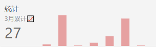

注意，本项目是基于
create-react-app搭建，但是使用了--typescript选项，所以是基于TypeScript写的。另外，项目地址在这里，求各位大佬看到了如果喜欢还请点个小星星(拜托啦这真的对我很重要 QAQ)
项目实现 Feature
小巧的用户验证
这一部分主要是用来注册/登陆的验证用的，注册/登陆后会自动跳转至首页，所以这边也做了一个简单的路由鉴权功能
西瓜闹钟
点击开始闹钟时，会显示 25 分钟的倒计时，计时结束后若没有打断则会生成一个西瓜
待办 todo 任务
新建待办任务和完成待办任务后都会出现任务的列表，而且是不同的列表展示
数据统计
主要有 3 个
- 月度统计：统计每个月任务总量的累计/增长率/平均值
- 西瓜历史统计：主要是一个长达 25 分钟的西瓜量，表示自己长时间的执行完某个任务的量化显示，可编辑/删除/恢复，同时也可以手动增加西瓜记录
- 待办 todo 历史统计：表示自己短时间内执行完的小任务的量化表示，可编辑/删除/恢复，同时可以查看已经删除的任务
项目主要技术栈
- React 16.12
- Antd 4.0.1
- Axios 库
- React-Router-DOM 5.1.2
- React-Redux 7.1.3
- Redux 4.0.5
- TypeScript 3.8.3
- History 4.10.1
- Lodash 4.14
- Stylus
这里需要说明的是目前的 antd 用的是比较新的版本，但是由于组件目前并不涉及到非常复杂的结构，所以可以使用其升级工具进行无痛升级
在配置 stylus 时应该在项目对应的 config-overrides.js 目录做如下的配置
... |
这里的作用相当于找出原有配置中的 oneOf 然后将 stylus 的配置加入其中，很好理解(因为我目前使用的时 cra 所以在某些配置方面能省则省了，目的是体验并上手 React 结合 TypeScript 的开发)
项目实现技术细节
部分组件使用 hooks
主要是倒计时组件这里使用了 useEffect 以及 useState 这两个 hooks
原来的倒计时组件用类组件来写的话就比较繁琐
// src/components/waterMelon/countDown.tsx |
本质上就是使用了一个生命周期的形式来实现效果，代码分散在多处不好做统一管理，但是使用了 hooks 之后代码量减少很多，减小了很多心智负担
const CountDown:FunctionComponent<ICountDownProps> = (props: ICountDownProps) => { |
使用 useEffect 可以统一处理副作用以及组件销毁时的逻辑，而使用 useState 就可以统一状态的管理，这样就可以最大程度的减小代码量，可以将一些比较重要的逻辑统一起来管理，使得组件代码更加明了
axios 配置
这里的配置比较简单，主要是通过使用 axios 的拦截器去拦截验证从后端发过来的 token 有没有，配置主要有以下两点
发送请求前需要在请求头中加 token 方便后端验证
// src/config/http.ts
instance.interceptors.request.use(
config => {
const xToken = localStorage.getItem('x-token')
if (xToken) config.headers['Authorization'] = `Bearer ${xToken}`
return config
},
e => {
console.log('request error: ', e)
return Promise.reject(e)
}
)接受响应之前设置下 token
instance.interceptors.response.use(
res => {
if (res.headers['x-token']) localStorage.setItem('x-token', res.headers['x-token'])
return res
},
e => {
// eslint-disable-next-line
if (e.response && e.response.status === 401 || e.response.status >= 500) {
// 一般是如果鉴权失败，需要做重定向跳转到登录页
console.log(history.location.pathname)
if (history.location.pathname === '/') history.push('/login')
}
return Promise.reject(e)
}
)
这里做了一个简单的路由鉴权，不过更加详细的鉴权我写在了 redux 的 userActions 中，不过留着下面来说
redux 以及 redux-thunk 这个中间件
模块划分
说到模块划分，基本是如下的结构redux/
├── actionTypes.ts
├── actions
│ ├── todosActions.ts
│ ├── userActions.ts
│ └── waterMelonActions.ts
├── reducers
│ ├── indexReducer.ts
│ ├── todosReducer.ts
│ ├── userReducer.ts
│ └── waterMelonReducer.ts
└── store.ts因为这里的各种
type都比较简单，所以这里就没有分各个模块文件了，只是就大概的actions以及reducers分了一下，store.ts模块主要就是creatStore以及applyMiddleware中间件。这里还用了一个redux-devtools-extensionredux 的调试工具，在 debug 环境调试用的。用户登陆/注册的鉴权
其实在用户登陆和注册之前可以先调用下
getUserInfo获取下用户的信息，先判断是否会得到错误，如果没错那么本来没有在/路由的就跳转到/，如果出错了那么在判断其是否在/路由，在的话就强制跳转至/login路由页面登陆和注册的逻辑基本就是如下
try {
await http.post(url, params)
const response = await http.get('/me')
const userInfo = response.data
dispatch({
type: VERIFY_USER_SUCCESS,
payload: userInfo
})
history.push('/')
} catch(e) {
console.log(e.response)
let errorInfo
if(!e.response){
errorInfo = '请检查网络是否正常'
} else {
const { errors } = e.response.data
errorInfo = errors.account
? errors.account
: errors
}
dispatch({
type: VERIFY_USER_FAILURE,
error: errorInfo
})
}为什么使用
redux-thunk来dispatch数据因为用到了异步，而我们这里的异步比较简单，实际上用
redux-thunk这个中间件就能解决问题了。那么这里的actions的写法也比较简单，只是需要返回一个async的带有dispatch函数参数的一个函数即可，redux-thunk会自己帮你 enhance 这个dispatchconst xxx = async (dispatch: any) => {
//...
dispatch({
type: 'YYY',
payload: {...}
})
}react-redux中的connect组件首先我不认同只有父级组件用
connect而其他组件就被动传props的这种用法。因为尽管是比较简单的一个项目，但是在某个功能模块上依然存在层级嵌套比较深的情况。有一般而言传个三级就觉得很麻烦了，这个时候子组件使用connect是很有必要的(虽然可能写起来依然麻烦了点，但是的确能省点心思思考我的父级组件到底给我传了个啥)
封装的 history 配置
这部分的代码也并不是特别复杂，如下所示
import { createBrowserHistory } from 'history' |
虽然在 App.tsx 中使用过 BrowserRouter，但是不如自己封装来的快，因为这块很多地方都要用到，比如如上所述的鉴权的位置，用于登陆验证过后的跳转
数据统计图
这次的数据统计图没有使用诸如 echart.js 和 highchart.js 的原因部分是因为觉得没有多大必要，觉得自己使用 svg 来实现或许会更加好一点，有点造轮子的意思，不过还是挺有趣的。当然这次也没有选中 canvas 的原因是 svg 有个好处就是不依赖 分辨率，因为它生成的图像是基于矢量位图 的，你放大缩小都不会失真。
折线图
折线图就是下图这玩意儿

我这边是先实现的折线图，所以先说一下大概是怎么实现的，代码如下所示
// src/components/statistics/polyline.tsx |
这里有几个属性，说明一下
fill: 表示填充进svg框住的那部分，取值是颜色points: 就是描线，线的坐标stroke: 表示fill外层的那条线，取值也是颜色strokeWidth: 表示线宽strokeLinecap: 表示从起点到终点的线它两边的形状，可以是butt | round | square | inherit
这里的逻辑很好理解，就是 svg 包 polygon 画线并填充颜色，然后是坐标点的计算
points = () => { |
这里本质上就是求出一个多边形每个点 x 和 y 的坐标，然后求出 range 范围有个对应的关系，基本上就能搞定了
条形柱状图
条形柱状图就是下面这玩意儿

这个逻辑就是在 svg 中渲染 rect
<svg className="bar-chart" width='100%' height={height}> |
width: 柱子的宽度height: 柱子的高度fill: 颜色填充，之前说过x:x坐标值y:y坐标值key: 就是key，一个 key 值，因为要渲染多个，所以需要这个指明每个rect元素的 id
坐标点计算逻辑如下
// src/components/statistics/barChart.tsx |
点线图
点线图就是下面这玩意儿

分析下，首先是背景的那个灰色的矩形框，就用 rect 绘制，然后使用 path 画线，用 circle 画圆圈，用 text 表示下面的点
<svg width='100%' height='200'> |
注意这里使用了 Tooltip 组件， 表示鼠标悬浮上去之后会有一个提示冒出来
点坐标的计算就是如下
points = () => { |
项目难点
项目难点有 2
使用 svg 矢量图的大小缩放的问题
因为在项目中还稍微用媒体查询做了下小屏幕的适配，但是在小屏幕适配下图形就显得不是很好看了，为了兼容这个小屏幕，花了点心思，首先使用 css 这种自适应适配的方式是不行的，不管是 flex 还是 100% 这种方式都不能使其适应小屏幕的宽度，所以最后采用 js 来解决，怎么解决的呢，一般来说分为以下几步
- 获取到其中一个
li的宽度
因为其实三个宽度都一样，只要获取到其中一个就可以了 - 将其加入点坐标的计算
- 完
加入点坐标计算上面已经说过了，现在说下宽度是怎么搞的
首先在 statistics 组件中引入两个变量
// src/components/statistics/statistics.tsx |
对应的 liRef 和 ulRef 为
ulRef = React.createRef<HTMLUListElement>() |
然后需要设定一个 updateSize 函数，就是当其宽度变时就要调用的
updateSize = () => { |
可以看到其实这里就是初始化的操作，利用 dom 的 current.offsetWidth 的属性确定宽度
然后在组件挂载时需要监听 resize 事件
componentDidMount() { |
在组件销毁时需要取消监听 resize 事件避免内存泄露
componentWillUnmount() { |
然后在把这两个 ref 定位到对应的 dom 上即可
<ul className="statistics" ref={this.ulRef}> |
这样通过 resize 就拿到了该组件的 width，在下面计算图形的宽度时就可以代入加参数计算了，一般来说这里就是计算一个 range 即可。
有关一个组件通信的功能
就是西瓜闹钟在运行时，本来是想让 waterMelon 组件和 todos 组件有个通信的过程的，比如将正在计时中的 waterMelon 和 todos 关联起来，如果此时有完成的 todos 任务，那么在计时后，完成的 todos 几个任务的 “合体” description 就是西瓜闹钟的 description，比如我完成了 todo1 和 todo2 和 todo3，那么在 watermelon 结束计时后其 description 就是 todo1 + todo2 + todo3 这种形式做自动填充。不过这个地方有些难度，主要在于代码实现比较难看所以我没继续添加了。我想了下有几种方案
- 每次完成一个
todos，都向后端发送一个请求记录当前的todos到waterMelon中 - 将
todos的数据用props传给waterMelon组件，只要todos有变化就改变waterMelon中的state.description - 将
description提升到redux中，每次完成一个todos，发送一个actionType，waterMelon接受这个并不属于它的actionType，将todo的description合并到waterMelon中 - 搞一个 window 全局变量存
description…
首先我想要说明的是，这里我尽量想做到 高内聚低耦合，然而这里的尴尬之处在于要实现这样的功能，这两个组件在这点上居然是强耦合的，以致于说以上的方案虽然可行一点点，但是在代码上就非常的不整洁，因为
- 每次发请求处理相当的麻烦，而且也不是一种优化，要知道请求一多也容易降低 app 的性能
- 这样做只能是在
componentDidUpdate这个生命周期里面来setState，处理一不小心就无限循环了，这还能行??? - 这样也不好，耦合了，而且这个功能并不是一开始就想出来的，而是后面加的，如果要该则需要改动代码的范围大，只能是重构有时间的情况下弄弄。代码一旦庞大就不好出手了，这也是很重要的一点。
- 这个想都不要想，全局变量污染的问题不应该再犯了…
综上，由于这个功能十分的的蛋疼(因为点击完成一个 todo 既要更新 todos 的数据又要更新 waterMelon 的数据简单使用 actionType 来做区分是不现实的)，而且目前也没有找到一个更加优雅的解决方案，故先搁置(或许如果各位感兴趣了我可以重构的((^_^)), 先别慌老铁)
总结
总之 TypeScript 是真香，少了自由度但是多了类型检查，能够不太费力的解决编程中因为静态视力导致的一些超级低级的 bug，以及 react 也真香，函数即UI这种思想很棒，而且天然支持 TypeScript，社区活跃并且轮子很多，也不乏优秀的插件，也许这就是是我转向 react 的原因之一吧哈哈。